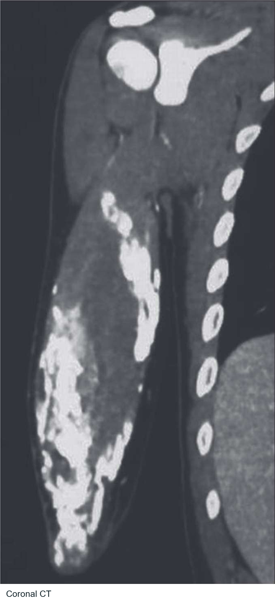
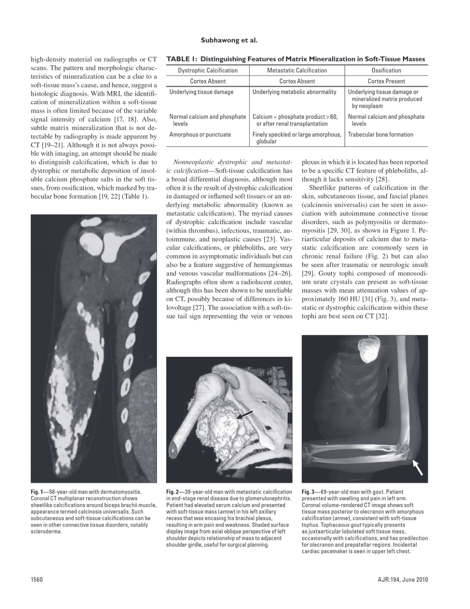

Dermatomyositis. What is the most likely diagnosis?
[...]Calcinosis universalis
[...]Calcinosis universalis

Sheetlike soft-tissue calcification is the visual clue. This is calcification, rather than organized cortical and trabecular bone.
Full source page and provenance
ct-1 · PDF page 2
